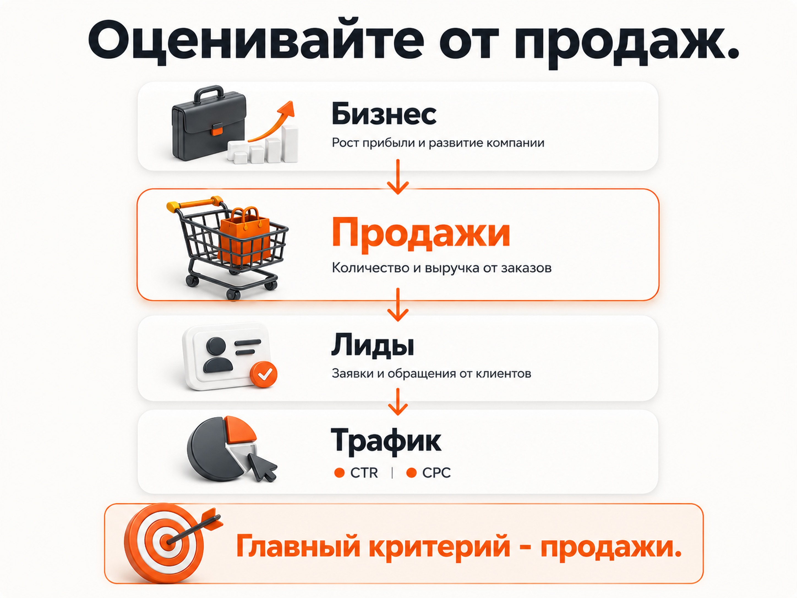
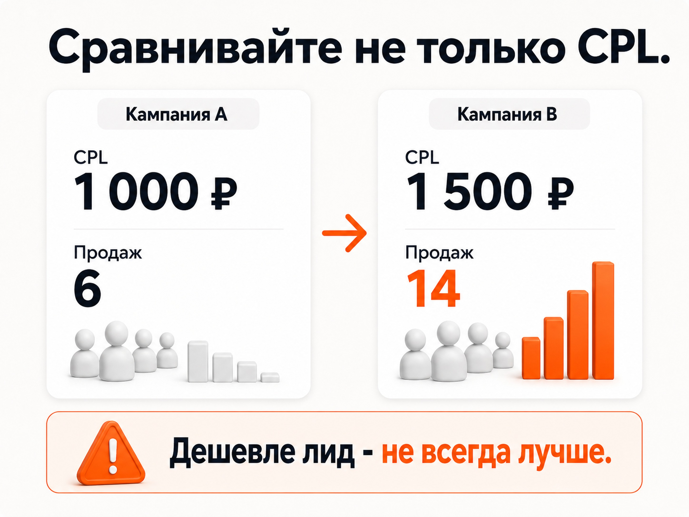
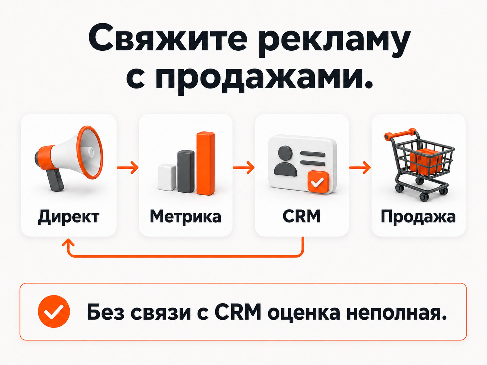

Блог о платном трафике
Как оценить эффективность Яндекс Директа
Если отвечать коротко, эффективность Яндекс Директа нельзя оценить по CTR, цене клика и даже по количеству заявок. Реклама работает хорошо, когда она приводит нужный бизнесу объем качественных обращений и продаж по стоимости, которая укладывается в экономику проекта.
Все остальные показатели нужны, чтобы понять, почему получился именно такой результат и где искать проблему, если он не устраивает.
Сам Яндекс рекомендует для кампаний, нацеленных на продажи или заявки, анализировать количество привлеченных клиентов, стоимость их привлечения и полученный доход. То есть оценка эффективности рекламы должна доходить дальше клика и конверсии на сайте.
Эффективность рекламы нужно оценивать от продажи к клику

Я обычно смотрю на показатели в обратном порядке относительно того, как пользователь проходит рекламную воронку.
| Уровень | Главный вопрос | Что смотреть |
|---|---|---|
| Бизнес | Приносит ли реклама деньги | Продажи, выручка, прибыль, ДРР, ROAS, стоимость клиента |
| Продажи | Что происходит с обращениями | Квалифицированные лиды, конверсия лида в продажу |
| Реклама | Сколько стоит получить обращение | CPL, CPA, количество лидов |
| Сайт | Насколько трафик превращается в обращения | Конверсия |
| Трафик | Почему результат получился именно таким | CPC, CTR, запросы, площадки, аудитории |
Чем выше показатель находится в этой таблице, тем ближе он к реальному результату бизнеса.
Условно прекрасный CTR не спасает кампанию, которая не дает продаж. Низкая цена клика не имеет большой ценности, если посетители не оставляют заявки. Даже хороший CPL ничего не гарантирует, пока неизвестно, что происходит с этими лидами дальше.
Сначала определите, какой результат для бизнеса допустим
Невозможно сказать, хорошо или плохо работает реклама, если заранее неизвестно, сколько бизнес может платить за результат.
Предположим, компания готова тратить на привлечение одного нового клиента до 20 000 рублей. В продажу превращается в среднем 25% нормальных лидов.
Тогда допустимая стоимость качественного лида составляет:
20 000 × 25% = 5 000 рублей.
Если такой лид обходится в 3 000 рублей, экономика имеет запас. Если в 8 000 рублей, проблема уже видна, даже если специалист показывает хороший CTR, много кликов и рост конверсии сайта.
Поэтому вопрос «какой CPL считается хорошим» без экономики конкретного бизнеса почти бессмыслен.
Для интернет-магазина логика похожая, но чаще удобнее оценивать стоимость заказа, ДРР или ROAS. Для услуг и B2B основой обычно становятся стоимость качественного обращения, стоимость клиента и продажи.
Прогноз бюджета Яндекс Директ: как рассчитать расходы, клики и заявки
CPL и CPA показывают стоимость результата, но не его качество

Для лидогенерации CPL и CPA обычно находятся среди первых показателей, которые я смотрю после запуска.
Но здесь есть принципиальная оговорка.
Получить заявку и получить потенциального клиента - не всегда одно и то же.
Допустим, кампания принесла 100 заявок по 1 000 рублей. Формально результат выглядит лучше, чем 60 заявок по 1 500 рублей.
Но первая кампания может приводить людей, которым не подходит товар, регион, цена или условия работы. Во второй обращений меньше, зато большая часть соответствует требованиям бизнеса.
Поэтому после CPL нужно смотреть следующий уровень - качество обращений.
Подробно сам расчет CPA я уже разбирал отдельно.
CPA в Яндекс Директе: что это и как считать
Качество лидов может полностью изменить оценку рекламы
Я бы разделял обычную стоимость лида и стоимость квалифицированного лида.
Формула простая:
Стоимость квалифицированного лида = рекламные расходы / количество подходящих обращений
Представим две кампании за одинаковый период.
| Показатель | Кампания А | Кампания Б |
|---|---|---|
| Расход | 120 000 ₽ | 120 000 ₽ |
| Все лиды | 120 | 80 |
| CPL | 1 000 ₽ | 1 500 ₽ |
| Квалифицированные лиды | 24 | 56 |
| Продажи | 6 | 14 |
| Стоимость продажи | 20 000 ₽ | 8 571 ₽ |
Если смотреть только на CPL, кампания А кажется лучше.
Если дойти до квалификации и продаж, картина меняется полностью. Кампания Б приводит лид дороже, но в итоге дает более чем в два раза больше продаж при том же рекламном бюджете.
Именно поэтому попытка любой ценой снизить CPL способна ухудшить реальный результат.
При анализе качества стоит отдельно разделять нецелевые обращения и автоматический спам или ботов. Это разные проблемы и причины у них тоже разные.
о нецелевых и некачественных лидах из Яндекс Директа
Продажи дают более точную оценку, чем заявки

Если бизнес может связать рекламное обращение с дальнейшей продажей, я ориентировался бы в первую очередь на этот уровень.
Нужно понимать, сколько рекламных лидов дошли до сделки и во сколько обошлось получение клиента.
Иногда после этого обнаруживается интересная картина: рекламная кампания с самым низким CPL оказывается далеко не самой выгодной.
Причины могут быть разными. Кампании приводят аудиторию с разной платежеспособностью, разными потребностями, разным средним чеком и разной вероятностью покупки.
Поэтому сравнивать источники только по стоимости первой заявки опасно.
Для длинных сделок особенно полезно связывать рекламную аналитику с CRM. Яндекс позволяет передавать офлайн-конверсии, включая действия, которые произошли уже после посещения сайта. Эти данные можно использовать и для анализа, и для оптимизации рекламы.
ДРР и ROAS нужны, когда можно связать рекламу с выручкой
Для интернет-магазинов и других проектов, где выручку можно достаточно точно привязать к рекламе, оценивать только CPA уже нет особого смысла.
Здесь удобнее смотреть, сколько денег реклама принесла относительно расходов.
ДРР = расходы на рекламу / выручка с рекламы × 100%
Если потратили 100 000 рублей и получили 500 000 рублей рекламной выручки, ДРР составляет 20%.
ROAS показывает то же соотношение с другой стороны:
ROAS = выручка с рекламы / расходы на рекламу
При тех же данных ROAS равен 5, или 500%.
То есть ДРР и ROAS во многом отвечают на один вопрос: сколько выручки удалось получить относительно рекламных затрат.
При этом ни ДРР 20%, ни ROAS 500% сами по себе еще не означают, что реклама выгодна.
Если маржинальность продукта низкая, даже небольшой ДРР может оказаться слишком высоким. Если маржинальность большая, бизнес способен позволить себе значительно более дорогую рекламу.
Оценивать эти показатели нужно относительно экономики конкретного продукта, а не по чужой «нормальной ДРР».
Конверсия помогает понять, где возникла проблема
Конверсия сайта полезна уже на этапе диагностики.
Предположим, стоимость лида выросла.
Это еще не означает, что Яндекс Директ стал приводить плохой трафик.
Цена заявки может вырасти из-за увеличения стоимости клика. Может снизиться конверсия посадочной страницы. Может измениться структура трафика. Может перестать работать форма. Может измениться предложение или спрос.
CR помогает разделить эти ситуации.
Если стоимость трафика почти не изменилась, но посетители стали заметно хуже оставлять заявки, нужно проверять сам трафик, сайт и оффер.
Если конверсия остается стабильной, а CPA вырос вслед за CPC, проблема находится уже на другом уровне.
Конверсия в Яндекс Директ: что это и как ее считать
CTR и CPC нужны для диагностики, а не для оценки бизнеса
CTR, CPC, показы и клики полезны, но я бы не называл их главными показателями эффективности рекламы.
Они находятся слишком далеко от денег.
Можно добиться высокого CTR за счет привлекательного объявления и получить множество переходов от людей, которые ничего не собираются покупать.
Можно снизить CPC и одновременно ухудшить качество трафика.
И наоборот, сравнительно дорогие клики могут прекрасно окупаться, если это люди с сильным намерением купить.
Поэтому я использую CTR и CPC для поиска причин результата, а не как конечный KPI.
Какой CTR считается хорошим в Яндекс Директ
Цена за клик в Яндекс Директе: что это и как управлять CPC
Как оценить эффективность Яндекс Директа на практике
Я бы проводил оценку в такой последовательности:
- Определить экономику. Сколько бизнес может платить за продажу, клиента или заказ. Для e-commerce определить допустимый ДРР или требуемый ROAS.
- Проверить аналитику. Учитываются ли формы, звонки, заказы и другие реальные обращения. Если часть продаж происходит позже, связана ли реклама с CRM.
- Посчитать конечный результат. Сколько было продаж, клиентов, выручки и рекламных расходов.
- Посмотреть качество лидов. Какая часть заявок реально подходит бизнесу и сколько стоит квалифицированное обращение.
- Сравнить CPL, CPA и конверсию. На этом уровне уже становится понятно, где начинает ухудшаться воронка.
- Перейти к трафику. Только после этого имеет смысл детально смотреть CPC, CTR, поисковые запросы, автотаргетинг, площадки РСЯ, аудитории и объявления.
Такой порядок не дает застрять в рекламном кабинете и оптимизировать показатели, которые сами по себе бизнесу ничего не приносят.
Если на этом этапе становится понятно, что результат плохой, дальше уже нужен аудит причин.
Аудит Яндекс Директ: что проверить и как найти проблемы в рекламе
Если данных о продажах пока нет
Так бывает достаточно часто.
Реклама работает, Метрика считает заявки, но CRM не связана с источниками или цикл сделки настолько длинный, что продажи появятся значительно позже.
В такой ситуации я бы временно ориентировался на три вещи: стоимость лида, долю квалифицированных обращений и стоимость квалифицированного лида.
Это значительно полезнее, чем просто CPA по отправке формы.
Но оценка все равно остается неполной. Без данных о продажах нельзя точно утверждать, какая кампания приносит бизнесу больше денег.
Поэтому по мере возможности аналитику лучше доводить хотя бы до статуса качественного лида, а затем до сделки.
Как понять по показателям, где проблема
| Что происходит | Что проверять |
|---|---|
| Много кликов, мало заявок | Качество трафика, запросы, площадки, сайт, оффер |
| CPL хороший, лиды плохие | Аудитории, запросы, РСЯ, автотаргетинг, форма и условия предложения |
| Лиды качественные, продаж мало | Отдел продаж, цена, продукт, процесс обработки |
| Продаж достаточно, но реклама не окупается | Стоимость клиента, средний чек, маржинальность, ДРР |
| CTR высокий, а продаж нет | CTR не использовать как показатель успеха |
| CPL вырос | Разделить влияние CPC и конверсии сайта |
| ROAS снизился | Проверить расходы, продажи, средний чек и структуру рекламируемых товаров |
Так анализ эффективности превращается из просмотра отдельных цифр в диагностику всей воронки.
За какой период оценивать эффективность рекламы
Универсального периода нет.
Результат должен успеть накопиться до уровня, по которому принимается решение.
Если бизнес получает десятки продаж ежедневно, данные набираются быстро. Если речь идет о строительстве, B2B или другой длинной сделке, между рекламным кликом и оплатой могут пройти недели.
Поэтому сравнивать рекламу только по одному или двум дням часто бессмысленно.
Период должен включать достаточно обращений для нормального сравнения и учитывать реальный цикл сделки. При сравнении кампаний также нужно использовать одинаковые периоды и одинаковые определения конверсии.
Так работает Яндекс Директ хорошо или плохо?
Главный критерий достаточно простой.
Яндекс Директ работает эффективно, если реклама стабильно приводит нужный бизнесу объем клиентов или качественных обращений и их стоимость укладывается в экономику проекта.
CPL, CPA, конверсия, CTR и CPC помогают разложить этот результат на составляющие. ДРР и ROAS позволяют связать рекламные расходы с выручкой. Данные о качестве лидов и продажах показывают, действительно ли рекламные конверсии превращаются в деньги.
Поэтому я бы не пытался найти один универсальный показатель эффективности интернет-рекламы.
Нужно пройти всю цепочку:
расходы -> трафик -> заявки -> качественные лиды -> продажи -> выручка и прибыль.
Чем дальше аналитика доходит по этой цепочке, тем точнее можно ответить на главный вопрос бизнеса: реклама действительно работает или просто показывает хорошие цифры в кабинете.
главная страница с кейсами и примерами результатов Яндекс Директа